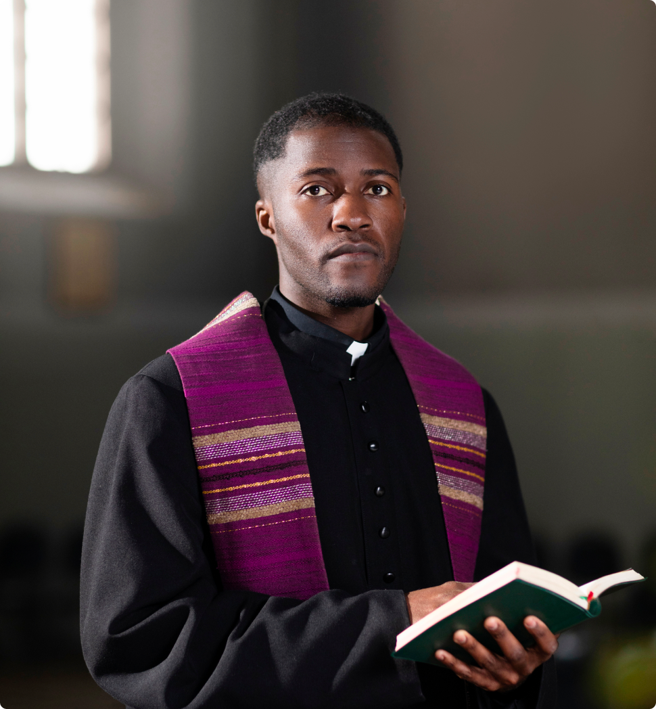

<div class="container">
  <div class="pastoral-msg">
    <div class="title">
      <h5>Welcome</h5>
      <h5>Message</h5>
    </div>
    <div class="pastor">
        
    </div>

    <div class="msg">
          <p>Dear Friends,</p>
          <p>Welcome to Asuoyeboah, Seventh-Day Adventist Church, a place where faith comes alive. We're thrilled you're here, even in the digital realm, and we hope this connection becomes a source of inspiration for you.</p>
          <p>At Asuoyeboah, Seventh-Day Adventist Church, we're not just a congregation; we're a family united by our shared love for Christ. We're committed to nurturing your spiritual growth, no matter where you are on your faith journey.</p>
          <p>As the pastor of this faith community, I want you to know that you're valued here. Our church is a safe space where your questions are welcomed, and your presence enriches us.</p>
          <p>Please explore our website to discover our ministries, services, and events. You'll find resources to deepen your faith, ways to get involved, and opportunities to make a difference.</p>
          <p>While we eagerly anticipate the day when we can meet you in person, we want you to feel connected today. You're part of our church family, and we're here to support you. Reach out to us with any questions or needs.</p>
          <p>Whether you're seeking a church home, spiritual growth, or simply a place to belong, you've found it at Seventh-Day Adventist Church, Asuoyeboah Together, we're on a journey of faith, and we invite you to walk it with us.</p>
          <p>Thank you for being a part of our online community. We look forward to what the future holds and the blessings we'll share together.</p>
          <p>In His Love,</p>
          <p>Pr. Dr. YJB Danquah<br>Pastor, Seventh-Day Adventist Church, Asuoyeboah</p>

    </div>

  </div>
</div>
